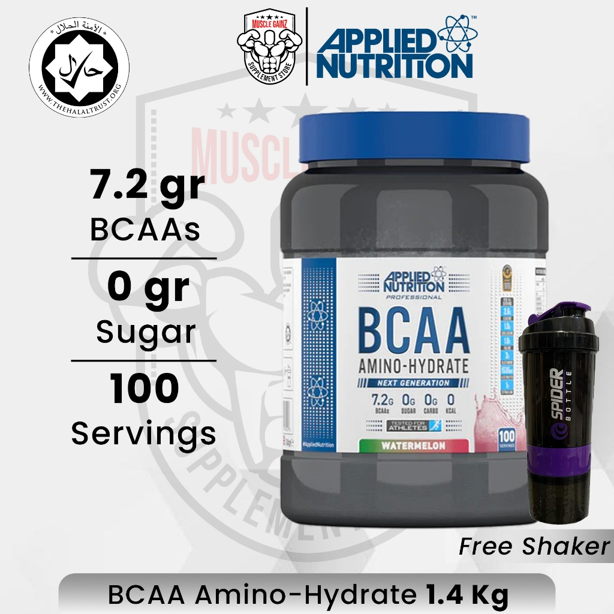
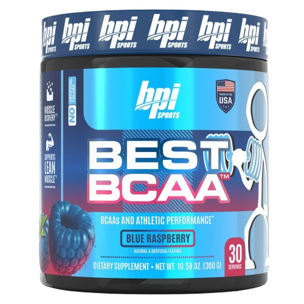
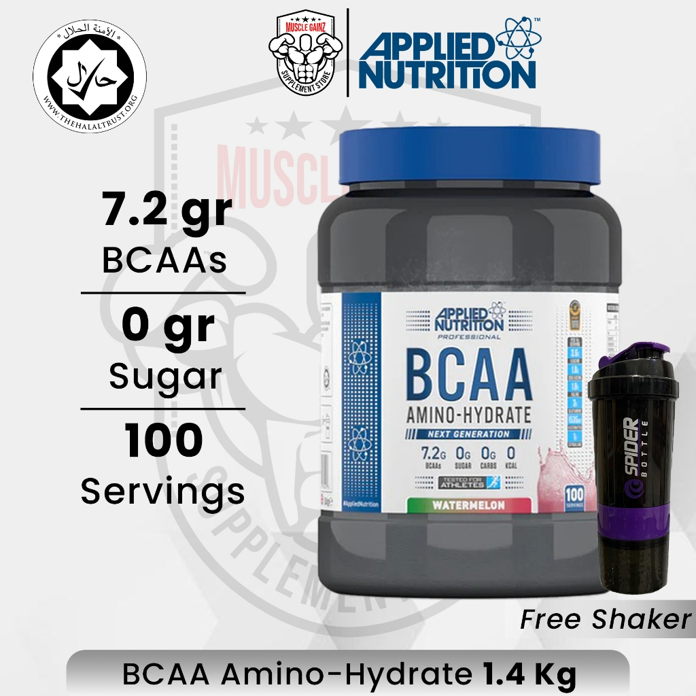
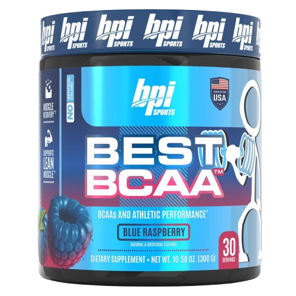
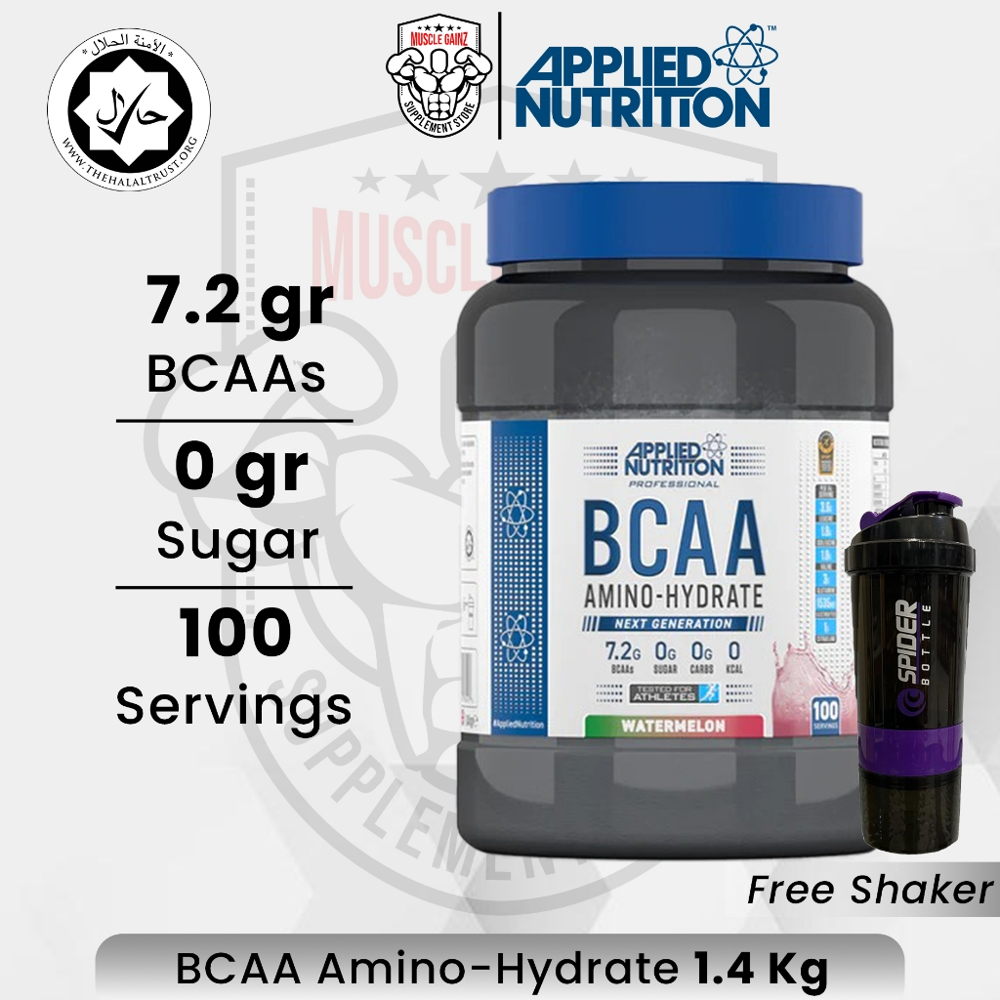
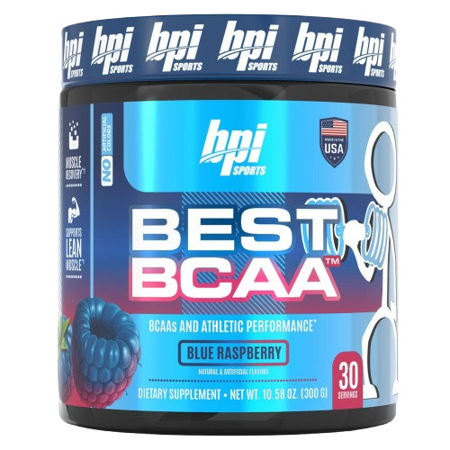
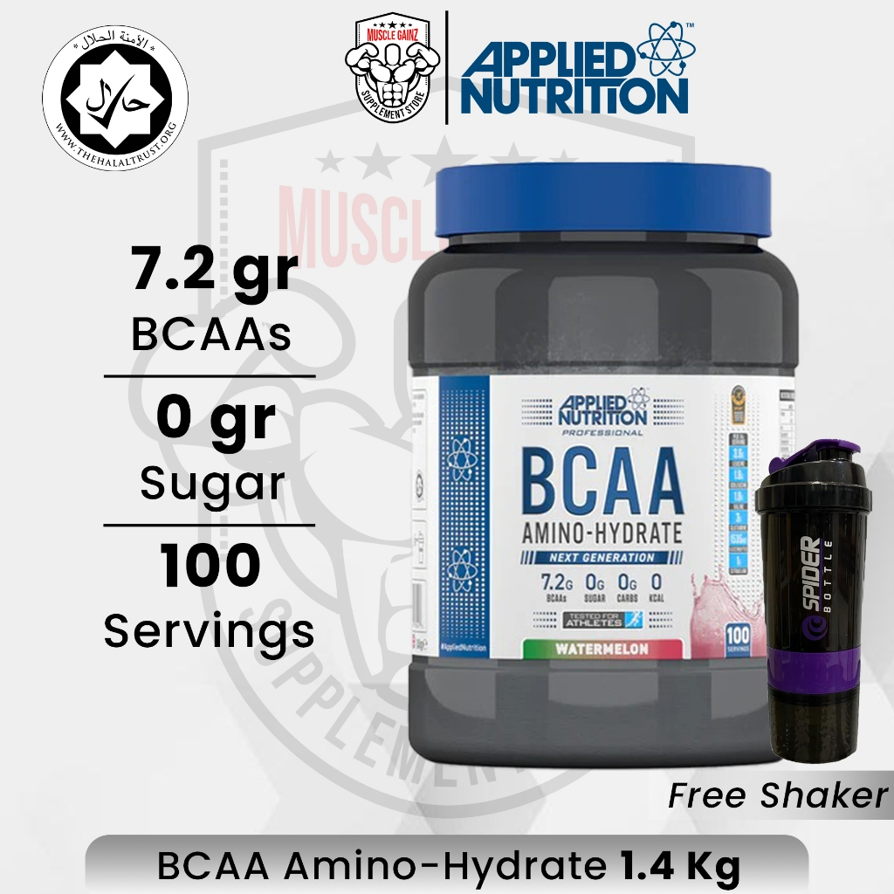
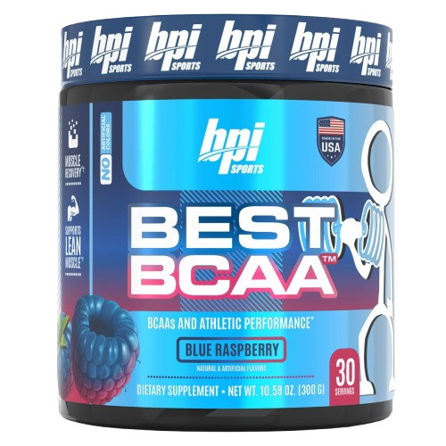

Branched-Chain Amino Acids (BCAAs) are a group of three essential amino acids: leucine, isoleucine, and valine. These amino acids are unique because they bypass the liver and are metabolized directly in the muscles, making them a powerful tool for athletes, fitness enthusiasts, and anyone aiming to optimize recovery and performance. Unlike other amino acids, the body cannot produce BCAAs independently, so they must be obtained through diet or supplementation.
BCAAs are well-known for their ability to accelerate muscle repair after intense workouts. By reducing muscle soreness and promoting protein synthesis, they help you recover faster and get back to training sooner.
Leucine, one of the three BCAAs, plays a critical role in activating muscle protein synthesis, the process by which muscles grow and repair. This makes BCAAs essential for those aiming to build lean muscle mass.
BCAAs help delay the onset of fatigue by reducing the production of serotonin in the brain during exercise. This allows you to train harder and for longer durations.
During intense training or calorie-restricted diets, the body may break down muscle tissue for energy. BCAAs provide a readily available energy source for muscles, minimizing muscle loss.
BCAAs improve the efficiency of energy production in the muscles, making them an excellent supplement for endurance athletes such as runners and cyclists.
Taking BCAAs before exercise can provide your muscles with an immediate energy source, reduce fatigue, and enhance endurance.
Sipping on BCAAs during a workout helps maintain muscle energy and delays fatigue.
Consuming BCAAs after exercise promotes muscle recovery, reduces soreness, and supports muscle repair and growth.
While supplements are a convenient source, BCAAs can also be obtained through protein-rich foods like:
BCAAs are a game-changer for anyone looking to improve athletic performance, boost muscle recovery, and support muscle growth. Whether you're hitting the gym, training for a marathon, or simply looking to maintain muscle health, incorporating BCAAs into your routine can help you achieve your fitness goals faster and more effectively.